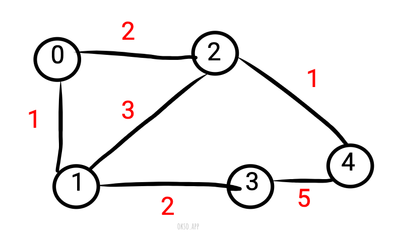

Disjoint Set (Union Find) & Kruskal Algorithm
In computer science, a disjoint-set data structure, also called a union–find data structure or merge–find set, is a data structure that stores a collection of disjoint (non-overlapping) sets. Equivalently, it stores a partition of a set into disjoint subsets. It provides operations for adding new sets, merging sets (replacing them by their union), and finding a representative member of a set. The last operation makes it possible to find out efficiently if any two elements are in the same or different sets.
Kruskal Algorithm use disjoint-set data structure to find minimum spanning tree (MST) in a un-directed, weighted graph. A minimum spanning tree is a (sub)set of edges that connect all vertices in a graph with minimum total edge weight.
Construct a graph.
package main
import (
"fmt"
"sort"
)
var p = fmt.Println
type Edge struct {
fv int // first vertex
sv int // second vertex
w int // weight
}
func main() {
// a un-directed and weighted graph represented using edgelist
graph := []Edge {
Edge{0,1,1},
Edge{0,2,2},
Edge{1,2,3},
Edge{1,3,2},
Edge{2,4,1},
Edge{3,4,5},
}
// use Kruskal Algorithm to find minimum spanning tree
min_tree := Kruskal(graph, 5) // 5 is number of vertices
p(min_tree) // [{0 1 1} {2 4 1} {0 2 2} {1 3 2}]
}Disjoint Set
Disjoint Set is often implemented by an array of integer, each vertex will map to an index in the array, and the value at that index will tell whether this vertex is a parent vertex (if it has negative value) or not. If the value is positive, it is the index of the vertex's parent. Using this we can quickly find out which group a vertex belong to, by keep traversing until reach parent node.
type DisjoinSet []int
// in this simple example, a vertex just a number which map to index of disjoin set.
// if vertex is a custom type, a map with key and value are vertex pointers can be used.
func (d *DisjoinSet) Find(vertex int) int {
current := (*d)[vertex]
for current > -1 {
vertex = current
current = (*d)[vertex]
}
return vertex
}
func (d *DisjoinSet) Union(fv, sv int) {
fp := (*d)[fv] // first parent
fpw := 0 // frist parent weight
sp := (*d)[sv] // second parent
spw := 0 // second parent weight
for fp > -1 {
fv = fp
fp = (*d)[fv]
fpw += 1
}
for sp > -1 {
sv = sp
sp = (*d)[sv]
spw += 1
}
// spw will be parent
if fpw > spw {
(*d)[fv] = sv
} else {
(*d)[fv] = sv
}
}Kruskal Algorithm

Kruskal's algorithm (also known as Kruskal's method) finds a minimum spanning forest of an undirected edge-weighted graph. If the graph is connected, it finds a MST. It use disjoint-set data structure to check if 2 vertices belong in a same group, if they are not in the same group, it will perform Union operation to put the 2 vertices into a same group and put the edge connected 2 vertices to MST.
func Kruskal(graph []Edge, vertices int) []Edge {
// minimum spanning tree
min_tree := []Edge{}
// sort the edgelist by edge weight
sort.Slice(graph, func (i, j int) bool {
return graph[i].w < graph[j].w
})
// disjoint set
ds := make(DisjoinSet, vertices)
for i := range ds { ds[i] = -1 }
// Loop through the edge list from lowest cost to largest.
// Perform Find operation on 2 vertices to see which set the belong to.
// If 2 vertices in different set -> perform Union operation,
// and add to minimum spanning tree.
// If 2 vertices in a same set -> skip this edge.
for _, v := range graph {
fg := ds.Find(v.fv) // first group
sg := ds.Find(v.sv) // second group
// if fg != sg then 2 vertices is in different set
// then perform Union and add to min tree
if fg != sg {
ds.Union(v.fv, v.sv)
min_tree = append(min_tree, v)
}
}
return min_tree
}The result:
min_tree := Kruskal(graph, 5)
p(min_tree) // [{0 1 1} {2 4 1} {0 2 2} {1 3 2}]